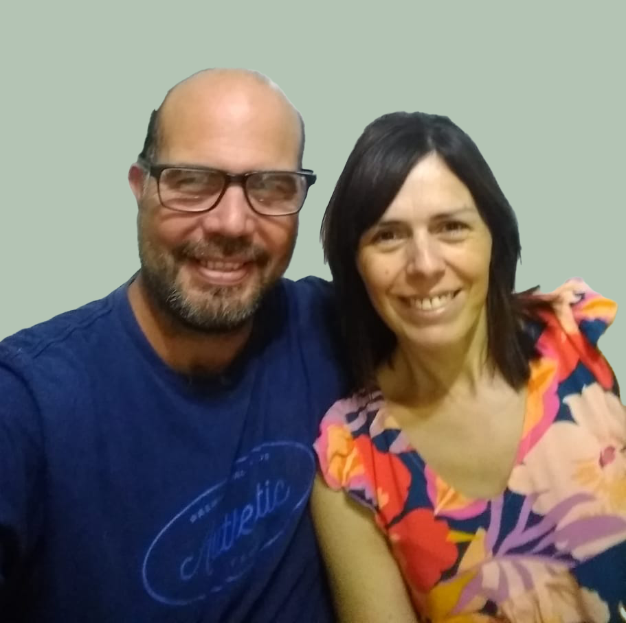
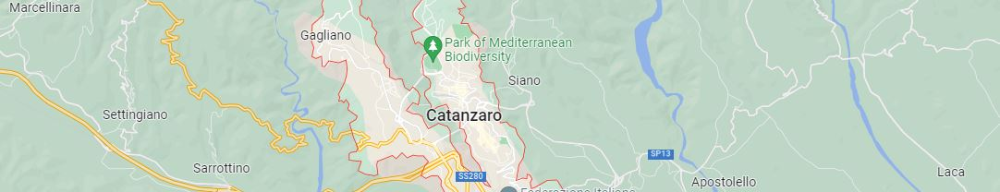

El Señor nos llama
a Italia.
Amados hermanos, arde nuestro corazón como los caminantes de Emaús escuchando al Señor.
Esta vez, Él camina hacia tierra europeas y quiere usarnos como sus calzados.
Esperamos, que al llegar a aquellas tierras al compartir el pan del evangelio; se abran los ojos de
muchos refugiados que han
perdido toda esperanza.
Nosotros

Somos Lorena y Mariano Flores, estamos casados hace 23 años y tenemos 4 hijas.
Hace más de 15 años que vivimos en Venado Tuerto, Santa Fe, colaborando y sirviendo en diversas areas en nuestra iglesia local, Comunidad Cristiana Pueblo de Dios.
Este último tiempo el Señor puso carga en nuestros corazones por trabajar con refugiados mu5ulm^n35, es por eso que nace la inciativa de este proyecto: Hacia Catanzaro.
Esta visión es fuertemente respaldada por nuestra Iglesia y por una red de contactos que ayudaran a que este viaje misionero sea una realidad.
Proyecto
El llamado del Señor es concretamente Catanzaro, esta es una ciudad de 90.250 habitantes, capital de la Región de Calabria, Italia.

Viaje
exploratorio.
Tenemos pensado realizar un viaje exploratorio de aproximadamente tres meses, para los meses de Enero, Febrero y Marzo del año 2023.

Soporte
Iglesia Local.
Queremos ayudar a la iglesia local en el trabajo diario, compartiendo experiencias, aportando estrategias para el desarrollo de la congregación.
Trabajo
con refugiados.
El principal motivo de este viaje, ayudar a las comunidades de refugiados mu5ulm^n35 y ucranianos que se establen en esta zona, en conjunto con la iglesia local.
Contacto
Si querés más información sobre el proyecto no dudes en contactarte con nosotros.
Mariano Flores: +5493462515945
haciacatanzaro@gmail.com
¿Querés ser parte?
Vos podés ser parte de esta visión, toda donación será recibida con mucha alegría en nuestros corazones.
Para colaborar desde Argentina y latinoamérica (solo países autorizados) el sitio redirigirá a Mercado Pago (en pesos Argentinos).
Para colaborar desde cualquier lugar del mundo el sitio redirigirá a PayPal. (en dólares americanos).
Para Argentina y latinoamérica
Resto de países